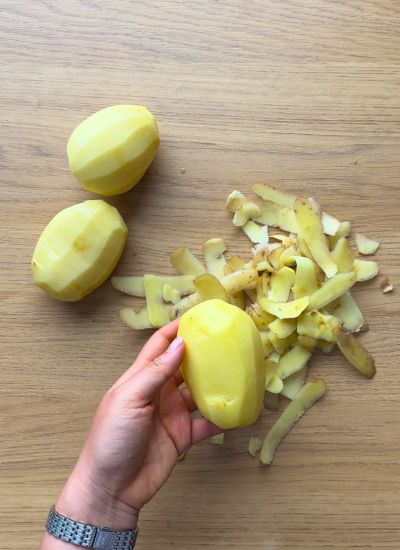
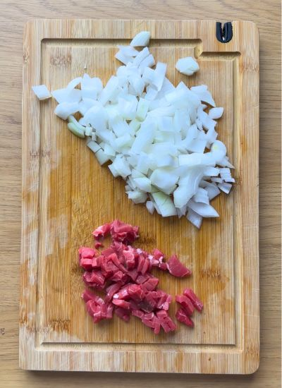
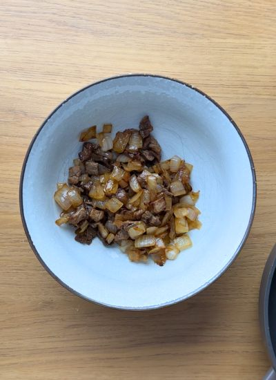
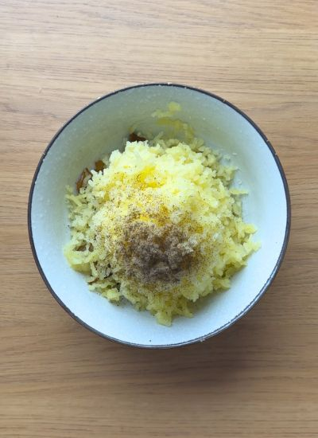
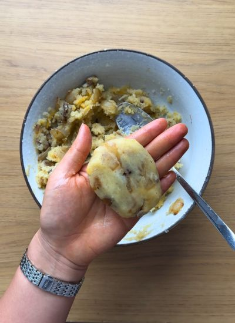
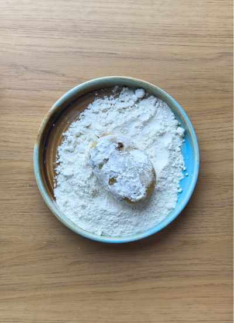
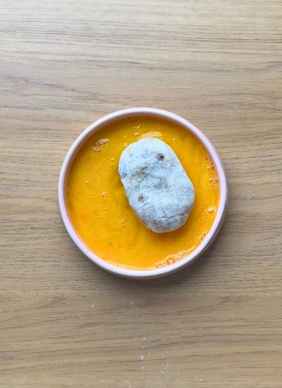
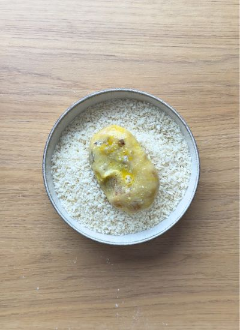

Por probar · Japonesa
← Recetas
Croquetas Japonesas (Korokke)

Preparación
- Pela las patatas y cuécelas en agua hirviendo hasta que las atravieses fácilmente con un cuchillo.

- Corta la cebolla y la ternera en dados pequeños.

- Sofríe la cebolla con aceite de oliva hasta que esté translúcida; añade la carne, sazona y cocina hasta que quede dorada y seca.

- Escurre y machaca las patatas. Mézclalas con el relleno, sal, pimienta y el queso opcional.

- Con las manos ligeramente engrasadas, forma 8 óvalos compactos.

- Reboza cada croqueta por harina…

- …luego por huevo batido…

- …y por último por panko, quitando el exceso en cada paso.

- Calienta el aceite a 180 °C y fríe por tandas hasta dorar. Escurre en papel y sirve caliente, con salsa tonkatsu si quieres.
Galería